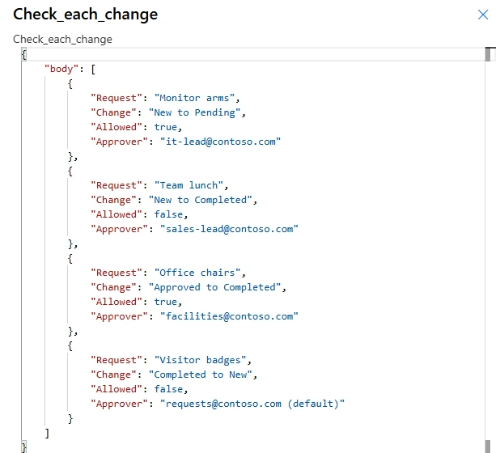

- Power Automate
- Level 8 · Real-world patterns · 4 of 8
Status-driven workflows and approvers from data
Most processes are a series of statuses: New, Pending, Approved, Completed. A good flow knows which moves are allowed, refuses the rest, and sends each request to the right approver without hard-coded emails.
Allowed moves, as data
WhatA JSON object listing, for each status, the statuses it may move to; plus a department → approver lookup.
WhyRules in data can change without editing the flow; illegal jumps are caught.
DemoFour requested status changes, checked and routed.
The allowed moves
New → Pending or Rejected
Pending → Approved or Rejected
Approved → Completed
Rejected and Completed: nowhere (final)
{
"New": ["Pending", "Rejected"],
"Pending": ["Approved", "Rejected"],
"Approved": ["Completed"],
"Rejected": [],
"Completed": []
}Four requested changes
| Request | From → To | Allowed? | Approver |
|---|---|---|---|
| Monitor arms | New → Pending | true | it-lead |
| Team lunch | New → Completed | false | – |
| Office chairs | Approved → Completed | true | – |
| Visitor badges | Completed → New | false | default |

contains(outputs('Allowed_transitions')?[item()?['From']], item()?['To'])| Piece | What it does |
|---|---|
?[item()?['From']] | The list of allowed targets for the current status. |
contains(..., To) | Is the requested status in it? |
coalesce(outputs('Approver_by_department')?[item()?['Department']], 'requests@contoso.com (default)')| Piece | What it does |
|---|---|
?[Department] | The approver for that department. |
coalesce(..., default) | A default when the department isn't listed. |
Putting it in a flow
Status change handler
Item modified, trigger condition: Status changed
Is the move allowed?
No
Set it back, tell the editor
Yes
Switch on the new status
Pending
Start approval with the looked-up approver
Approved
Notify requester
Completed
Archive
New to this? Start from the basics optional
State machine: an item is always in one state, and only certain moves are allowed.
Common mistakes
- Rules hard-coded in nested Conditions.
- Approver emails typed into the flow.
- No default approver.